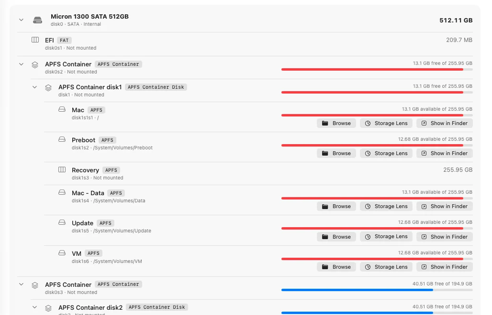
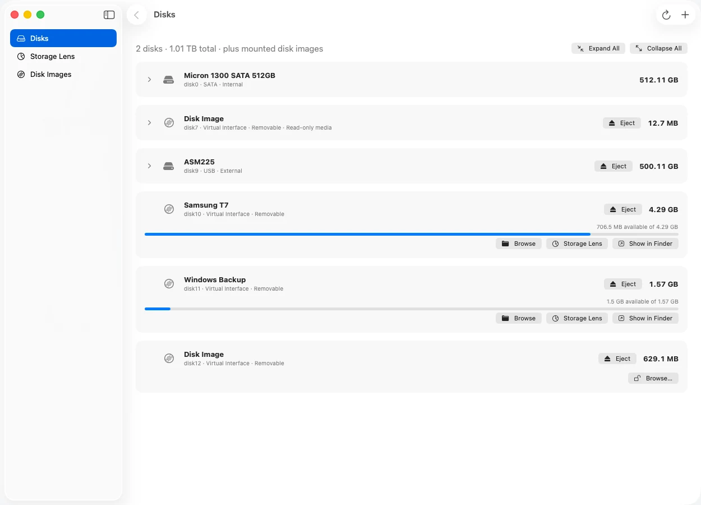
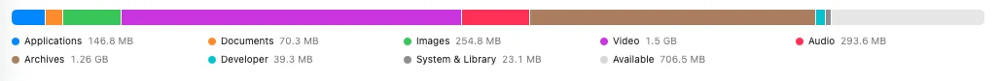
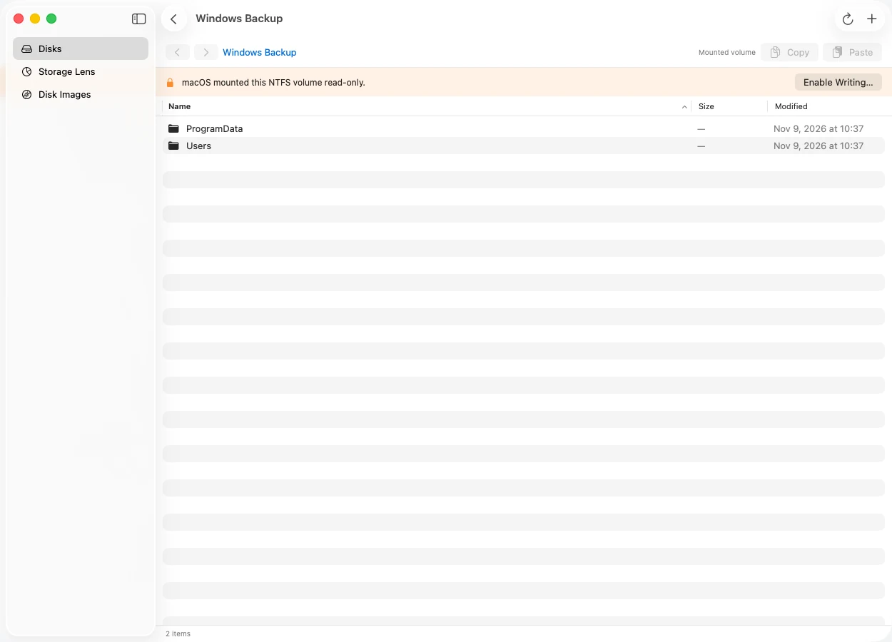
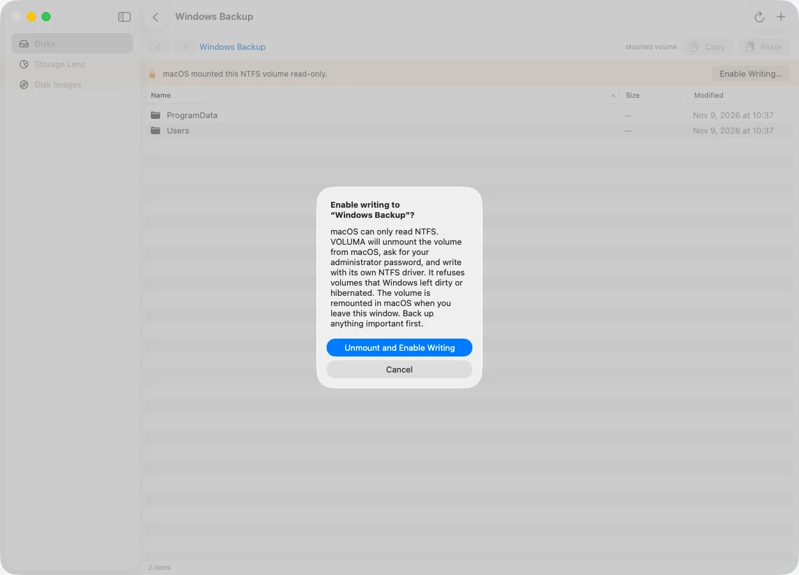
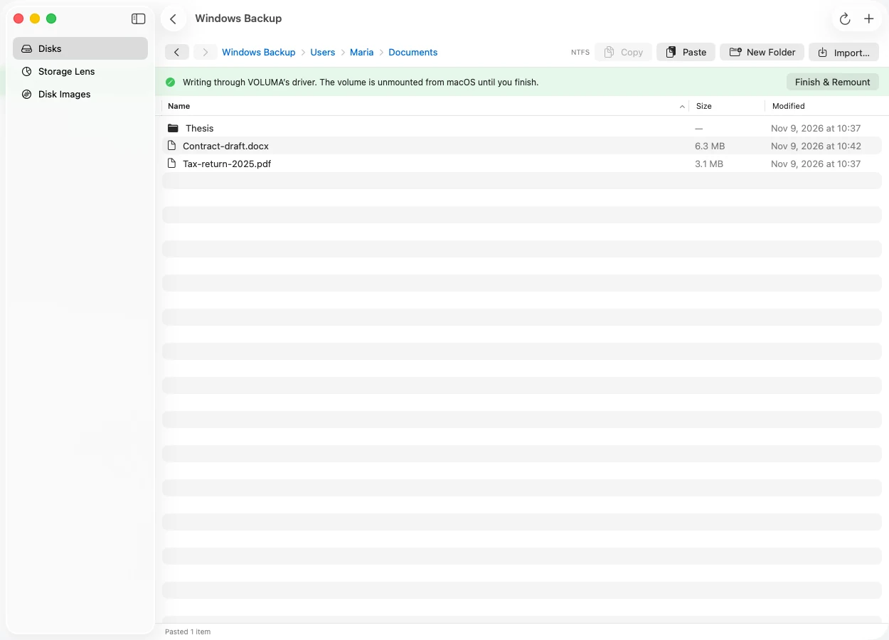

Your whole machine as a tree
Disks, partitions, APFS containers and volumes with capacity and free space. Collapse what you do not need and the tree remembers its shape.

A native macOS explorer for NTFS, exFAT, FAT, ext4, APFS and HFS+. Browse, copy between drives, and write to NTFS.

Read and write
Read
Built from the operating system's own disk APIs, with drivers that read the filesystems themselves.
Disks, partitions, APFS containers and volumes with capacity and free space. Collapse what you do not need and the tree remembers its shape.

See what is using your space by type, then drill into folders like Finder.

Paste into NTFS, exFAT or FAT from another drive or from Finder. A name clash never overwrites.
One click unmounts every volume on an external drive and ejects it. The internal disk never gets the button.
Each driver is checked against volumes made by macOS, ntfs-3g or e2fsprogs, then fuzzed with corrupted disks.
macOS mounts NTFS drives read-only, so Paste is greyed out. VOLUMA writes to them with its own driver.
VOLUMA notices that macOS mounted the volume read-only and says so, with one button to change that.
It unmounts the volume from macOS and asks for your administrator password once. Drives that Windows left dirty or hibernated are refused.
Files go in through VOLUMA's NTFS driver. Finish, and the drive returns to macOS.



{{BENCH_INTRO}}
{{METHOD}}
Support is listed only where it has been built and tested.
Create, overwrite, delete, rename and move files and folders. Large directories, MFT growth, and refusal of dirty or hibernated volumes.
Checked by ntfs-3g: ntfsresize, ntfscat, ntfslsFiles and folders with long and Unicode names, directory growth, and rollback when a drive fills up.
Checked by macOS fsck_exfat and a read-only mountLong names, nested folders, moves that fix up parent links. Refuses volumes that were not cleanly unmounted.
Checked by macOS fsck_msdos and a read-only mountExtents, 64-bit, flex_bg, sparse files and symlinks. Refuses volumes that need journal recovery.
Checked by e2fsck-clean images from mke2fsNewest checkpoint, checksum on every object, case-sensitive volumes, hard links and symlinks.
Compared byte for byte with a macOS mountHard links, files with many extents, and refusal of volumes with an unreplayed journal.
Compared byte for byte with a macOS mountWriting to a drive you cannot easily back up deserves caution, so VOLUMA refuses before it risks anything.
If Windows did not shut down cleanly, or Fast Startup left the drive hibernated, VOLUMA reads but will not write.
The privileged helper serves a single device over a private socket, and touches files only by name inside a staging folder.
If a name already exists, the copy becomes "name copy". Nothing is replaced behind your back.
Space is released when a copy fails halfway, and the volume keeps its dirty flag after an I/O error so Windows can check it.
Version {{VERSION}} for macOS 14 or later. {{ARCH_NOTE}} Free, MIT licensed.
SHA-256 {{SHA256}}
VOLUMA.app to Applications.xattr -cr /Applications/VOLUMA.app.Yes, with VOLUMA. macOS itself mounts NTFS read-only. VOLUMA unmounts the volume, asks for your administrator password, and writes through its own NTFS driver, then returns the drive to macOS. It refuses drives that Windows left dirty or hibernated.
Yes. It is free to download and use, under the MIT licence. There is no account and no network access.
Yes, read-only. VOLUMA browses and copies files out of ext2, ext3 and ext4 volumes, on disk images and on unmounted partitions. For a live partition it uses the same administrator-approved helper as NTFS writing, and it never writes to ext4.
No. It browses, copies and writes inside its own window and gives mounted volumes back to macOS afterwards. If you need a drive to appear in Finder while writing, that is not something this release does.
Those products are commercial drivers that mount an NTFS drive read-write in Finder. VOLUMA is a free app with its own driver: you browse and paste inside it, and it asks for permission each session. It is younger, so back up first.
The driver is tested against images made and checked by ntfs-3g, including corrupted disks, and it refuses unsafe volumes. It has not been checked with Windows chkdsk. Keep a backup of anything you cannot replace.
No. VOLUMA reads and writes files inside filesystems. To flash a Windows or Linux ISO onto a USB drive, use Ndaga Fijo.
{{ARCH_FAQ}}